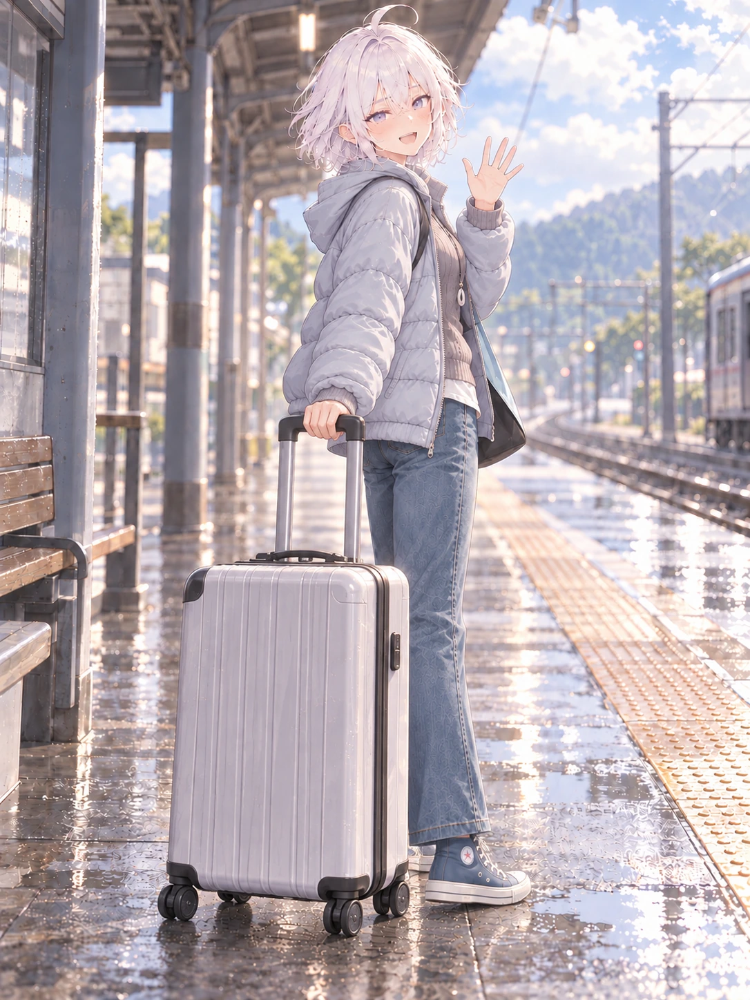

其他制作记录 / 逐页阅读
N14 · 独自出发的小站
用户评价最后一版好多了，认可身前箱体与握杆动作方向；作为当前较好版继续参考。一只脚被箱体遮挡，未完整核验。

检查与反馈记录
- v03与v04使用用户透视裁切图后，箱体角度变化仍很小，仍接近正面视角，未通过。
- v05把动作改成停步回看，但箱子仍在侧边，用户指出核心是行李箱、手臂与身体透视以及整体动态。
- v06按用户最新意见把箱子放至人物身前近景，遮住部分下半身；箱体正面、窄侧面和顶部可读，拉杆从握把连续落至箱顶，轮子落在同一站台地面。
- 持杆手位于身前偏左，肩部放松、肘部略弯，身体在箱体之后；动作比侧后拖行构图更连贯，待用户判断是否舒服。
- 挥手手与握杆手各一只，双腿形体可辨；箱子遮住一只脚的大部分，不能完整核验双脚与鞋底，故全身检查未完全通过。
- 服装、脸发、车站氛围沿用原设定；用户四张照片仅作为行李箱透视参考。
- 用户补充：重点在箱子和胳膊、身体的透视及整体动态，不只箱体；可以改动作。
- 用户偏好：箱子放在身前并遮挡部分身体；提包或放一边也可，但本版选择身前箱体遮挡方案。
- 用户反馈：最后一版好多了；之后持续注意整体透视与动作受力关系。